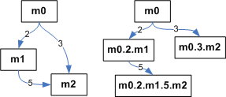

JScoper: An Eclipse plug-in for Supporting Research on Scoping and Instrumentation for Real Time Java Applications |
|
|

|
JScoper
is an Eclipse plug-in designed to assist developers,
researchers and students, to generate, understand, and
manipulate memory regions according to the Real-time
Specification for Java (RTSJ). |